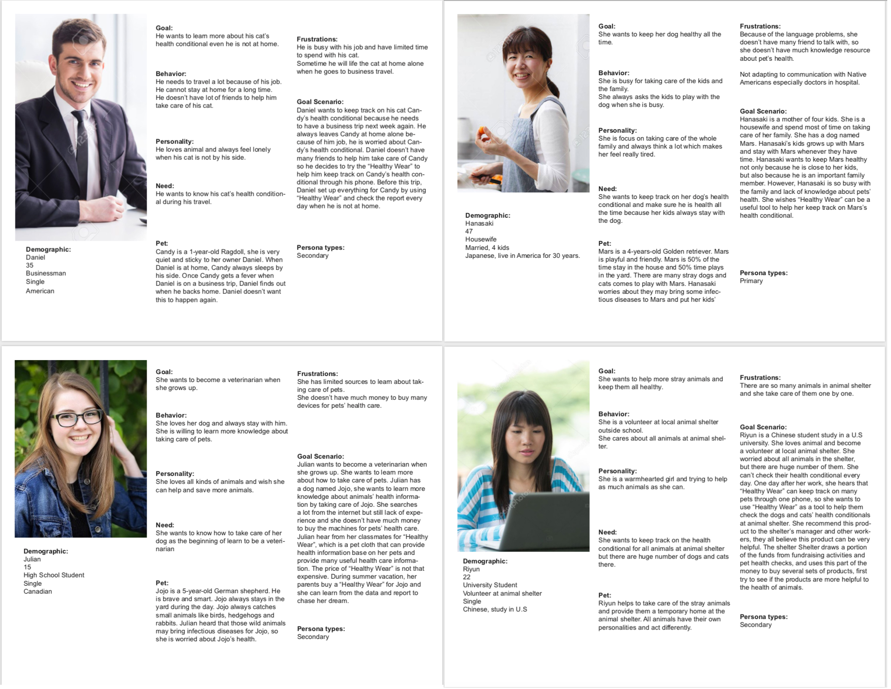
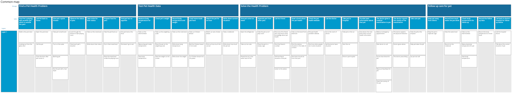
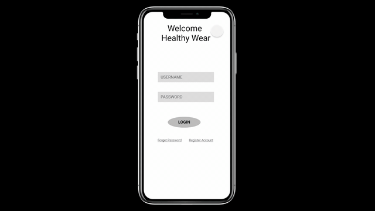
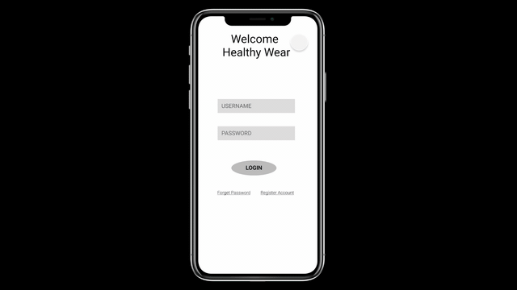

Healthy Wear - Pet Health Monitor App Design
Problem and Goal
Big Problem:
How to track your pets’ health conditional and get pets’ health information: Many owners are lack of experience and knowledge about pets illness, when pets get some chronic disease or some serious disease which may not easy to observe during earlier stage, even the pets feel uncomfortable, the owners may hard
to pay attention about it immediately, which makes many pets miss the best therapy time and may cause some bad sequela during their life.
Goal:
Educate pet owners about how to take care their pets better and keep track on pets’ health situation all the time with alert about unexcepted health condition and advices about improve pets’ wellbeing base on pets’ health information.
Persona

Story Map

Prototype
 
